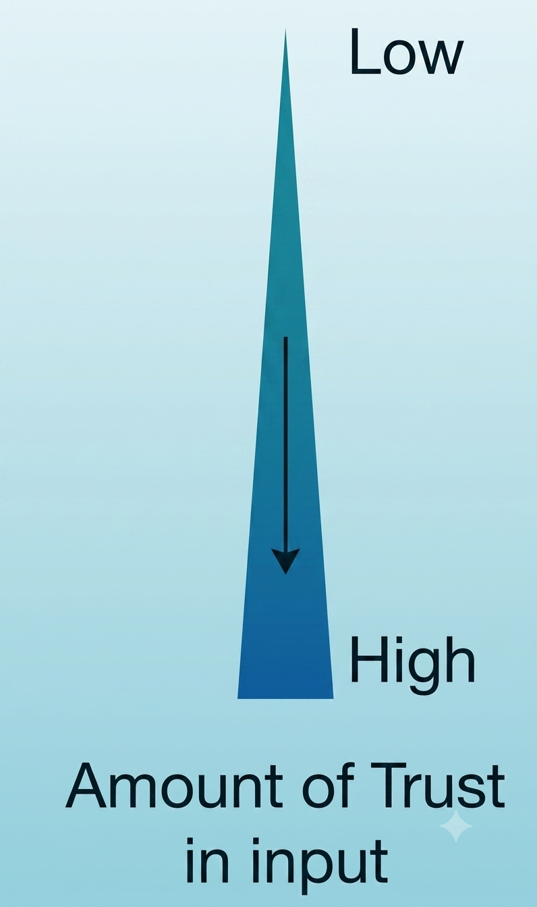
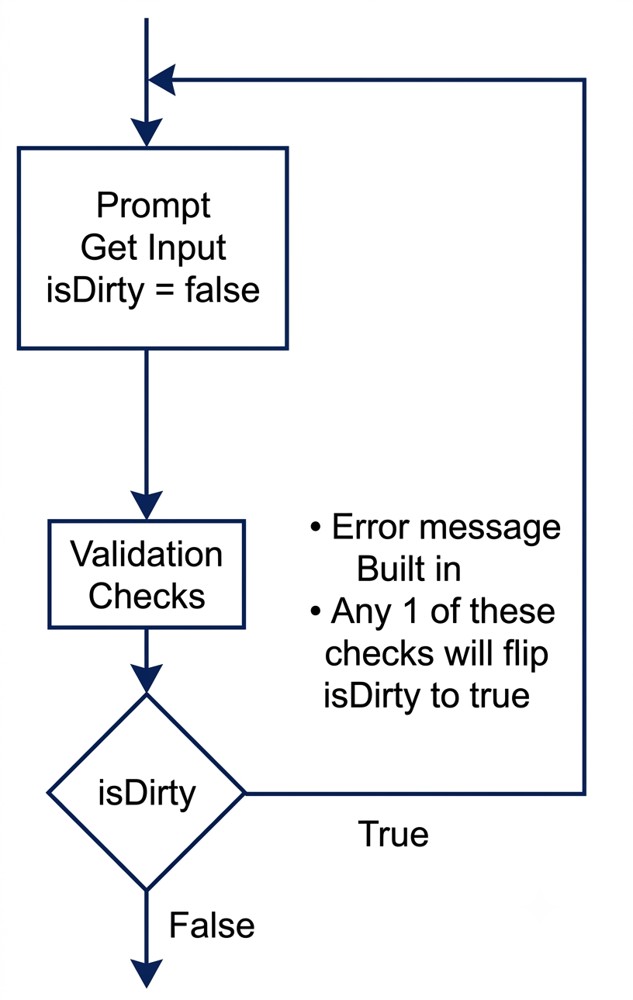
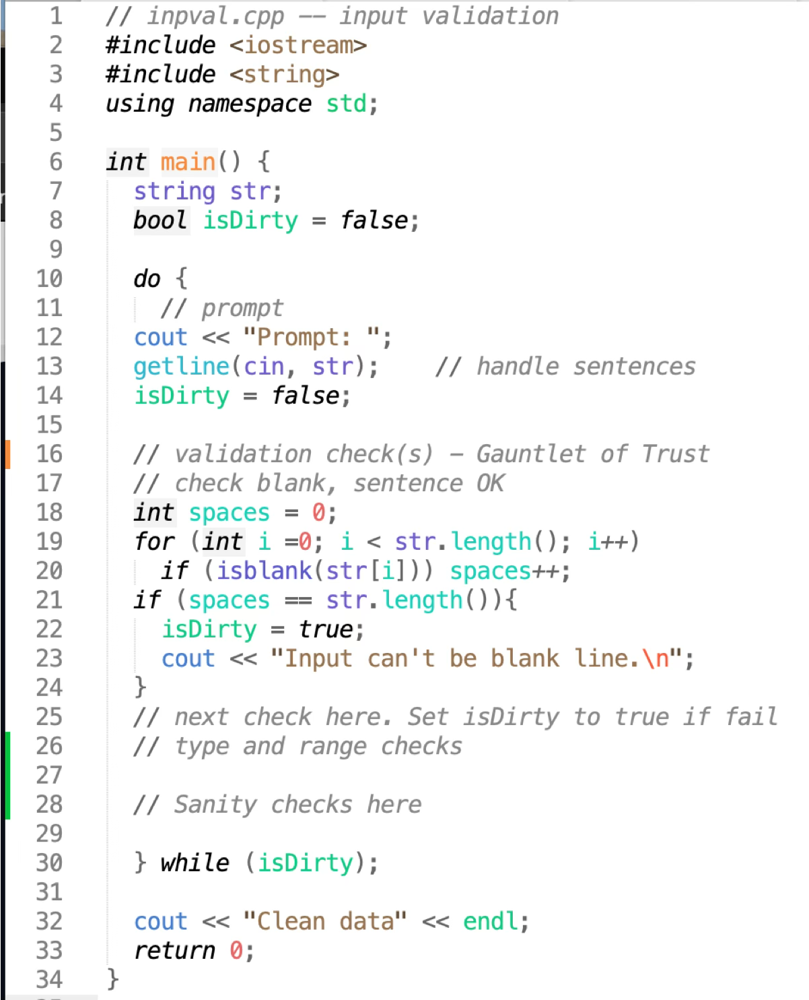
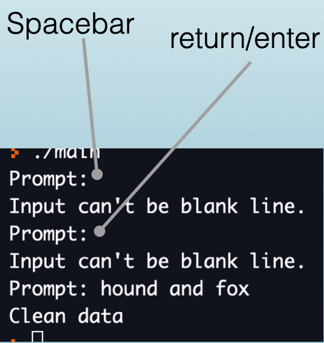

C++
i = i + 1 Have A Shortcut?Loop code often changes a control variable by exactly one. C++ gives that pattern its own notation because it is so common.
| Operator | Meaning | Equivalent statement |
|---|---|---|
x++ |
increase x by 1 |
x = x + 1 |
++x |
increase x by 1 |
x = x + 1 |
x-- |
decrease x by 1 |
x = x - 1 |
--x |
decrease x by 1 |
x = x - 1 |
When the operator is alone on a line, prefix and postfix forms leave the variable with the same final value.
The update expression i++ means “move to the next value.” In loop headers, i++ is the conventional form students will see most often.
Use -- when each pass moves the control variable one step downward.
The difference matters only when the expression’s value is used.
Avoid mixing increment operators into larger expressions until the order is clear.
Use compound assignment when the step is not exactly one.
| Statement | Meaning |
|---|---|
x += 5; |
x = x + 5; |
x -= 2; |
x = x - 2; |
x *= 3; |
x = x * 3; |
x /= 4; |
x = x / 4; |
++ and -- are special cases of this broader shorthand family.
Prefer the form that makes the loop movement obvious.
Shorthand should make the code easier to scan, not harder to reason about.
Use ++ and -- for one-step movement. Use compound assignment for larger steps, and keep prefix/postfix differences out of complex expressions unless the order matters.
Most loops stop when the condition becomes false. break gives the loop a second exit point from inside the body.
break Doesbreak exits the nearest loop immediately. Execution continues after the loop.
The output stops at 4 because the loop exits before printing 5.
This pattern is useful when the loop must read before it knows whether to stop.
Once the target is found, the remaining loop passes cannot improve the answer.
In nested loops, break exits only the loop it is directly inside.
The outer loop still continues with the next row.
Prefer a loop condition when the stopping rule is simple.
Use break when the clearest stopping moment happens inside the loop body.
switchInside a switch, break exits the switch, not the surrounding loop.
This break prevents fall-through to the next case.
break stops the nearest loop or switch immediately. Use it when stopping from inside the body is clearer than forcing the exit into the loop condition.
continue does not stop the loop. It skips the remaining statements in the current pass and moves to the next condition check.
continue DoesThe output is 1, 2, 4, and 5. The loop keeps running, but the print statement is skipped when i is 3.
| Statement | Effect |
|---|---|
continue |
skip the rest of this pass |
break |
exit the loop immediately |
Use continue when this value should be ignored but the loop should keep checking later values.
Negative scores are ignored. Valid scores still contribute to the total.
Update the loop-control variable before continue.
If the update comes after continue, the loop may never move forward.
Use it sparingly. A simple if statement is often clearer.
continue skips the rest of the current loop pass and returns to the next condition check or update step. It is useful for ignoring one case while allowing the loop to keep working.
| Strategy | Meaning |
|---|---|
| Allow by default | Accept most input and reject known bad values |
| Deny by default | Reject everything except known good values |
| Check | Question |
|---|---|
| Presence | Is there data? |
| Shape | Is it the kind of input we need? |
| Range or set | Is it an expected value? |

getline() so the program can see the whole response.Input validation checks client data before the rest of the program trusts it. The goal is to reject bad input early, explain the problem, and ask again.
The best time to validate input is immediately after reading it.
Do not let questionable data travel deeper into the program.
A validation loop should do three things.
“Invalid input” is rarely enough. A useful message teaches the client how to recover.
The loop condition describes bad data. The loop stops when the value is acceptable.
Use set validation when the legal values are specific choices rather than a continuous range.
A while validation loop needs a first value to test.
Without the priming read, the first condition check has no meaningful input value.
The loop that uses count should not run until count has been validated.
Range validation assumes the extraction succeeded. If the client types abc for an integer, cin enters a failed state.
Recover from type failure before applying ordinary range checks.
This combines type recovery with range validation in one loop.



Input validation protects the program boundary. Read the value, reject invalid data with a specific message, reprompt, and only process the value after it passes the check.
++, --, and compound assignment make loop updates easier to read.break exits the nearest loop or switch immediately.continue skips the rest of the current loop pass but keeps the loop running.i++ in ordinary for-loop update expressions.+= or -= when the loop moves by more than one.x++ and ++x produce the same value inside a larger expression.++ always changes the value by exactly one.i = i + 1 using the increment operator.int x = 3; cout << x++ << " " << x;.100 down to 0 by tens.++ or --?break close to the break statement.break in searches when the answer is already found.break exits every nested loop.break in a switch with break in a loop.break statements when one loop condition would be clearer.0.break appears inside a switch inside a loop.break?break statement easy or hard to trust?continue for early skip cases.continue in while loops.if when it reads more directly.continue with break.continue before the loop-control variable changes.continue statements.1 to 20 using continue.continue example using an if statement instead.continue?continue be risky in a while loop?if statement be clearer in this case?1 and 4.0 and 100.1 to 99.A, D, or Q.score < 0 && score > 100 is the wrong invalid condition.CISP 400 · Fowler